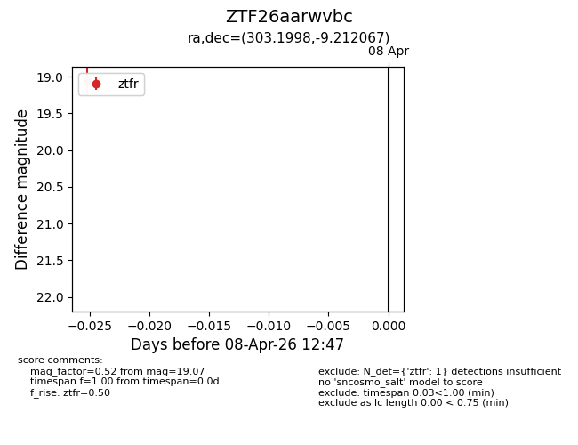
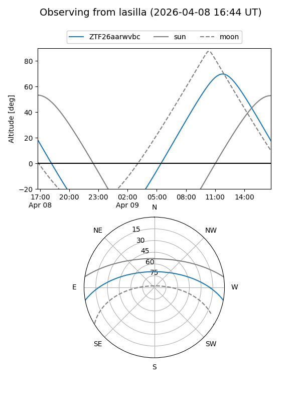
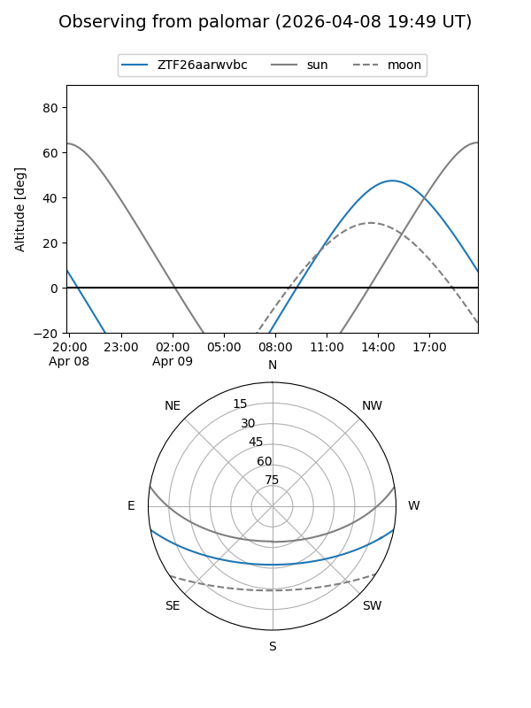

ZTF26aarwvbc
Target ZTF26aarwvbc at 2026-04-08 12:52
Aliases and brokers:
FINK: link
Lasair: link
ALeRCE: link
alt names
ZTF26aarwvbc (ztf,fink_ztf)
Coordinates:
equatorial (ra, dec) = 303.1998,-9.21207
equatorial (HMS+DMS) = 20:12:47.95,-09:12:43.44
galactic (l, b) = (33.7971,-22.23239)
Flags:
Photometry:
last ztfr=19.07
1 ztfr detections
Lightcurve

Visibility


Additional plots